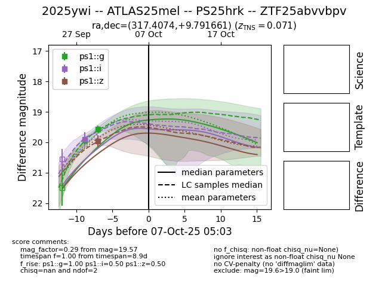
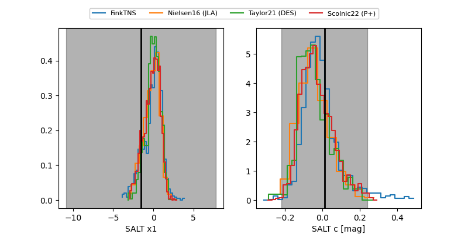

FINK: ZTF25abvvbpv
Lasair: ZTF25abvvbpv
ALeRCE: ZTF25abvvbpv
TNS: 2025ywi
YSE: 2025ywi
2025ywi (yse,tns)
PS25hrk (panstarrs)
ATLAS25mel (atlas)
ZTF25abvvbpv (ztf)
equatorial (ra, dec) = (317.4074,+9.79166)
galactic (l, b) = (59.5167,-24.82246)


last ps1::g=19.57, ps1::i=19.89, ps1::z=19.96
2 ps1::g, 1 ps1::i, 1 ps1::z detections